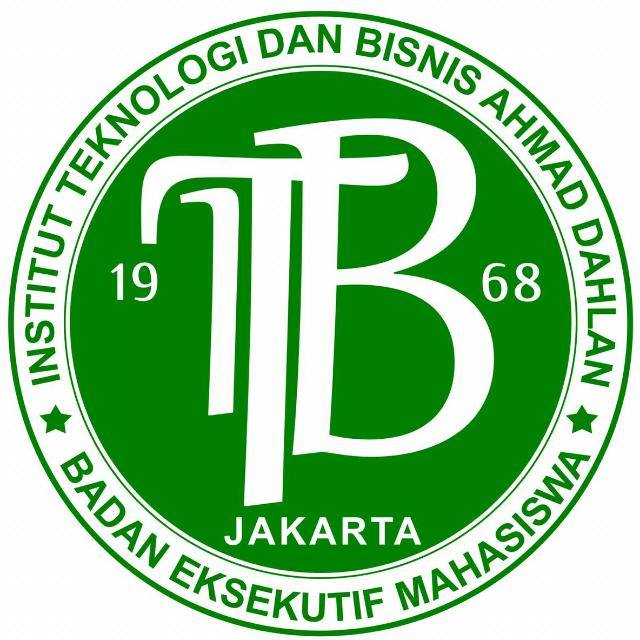

Badan Eksekutif Mahasiswa (BEM)
Verified
Badan Eksekutif Mahasiswa
Badan Eksekutif Mahasiswa (BEM) adalah badan organisasi tertinggi dalam sebuah Universitas, Institut, Politeknik,
ataupun Sekolah Tinggi dan memiliki landasan hukum berdasarkan KEPMEN No. 155. Keberadaan BEM disebuah Perguruan Tinggi sangatlah
fungsional, baik untuk pihak kampus sendiri ataupun untuk UKM berserta civitas akademika Perguruan Tinggi tersebut.
Prof.Cahya Nomu, M.Si
Verified Lecturer
Early childhood education teacher Education
Faculty of Education
Research Interest
Early Childhood Education, Assessment of Early childhood Education,
Early Childhood Social Studies
Mudiyah Banita, S.Sy., M.Pd
Verified Lecturer
Program Studi Pendidikan Masyarakat
Fakultas Ilmu Pendidikan
Research Interest
Perancangan pelatihan dan kursus, penggalian kebutuhan belajar orang dewasa,
pengembangan kurikulum pelatihan dan kursus
Kacilo Mikumi,S.E, M.Pd
Verified Lecturer
Program Studi Manajemen Pendidikan
Fakultas Ilmu Pendidikan (FIP)
Research Interest
Leadership ; Financial management of education; Gifted education;
Character education; School managemen
Himpunan Mahasiswa
Verified
Himpunan Mahasiswa
Bertekat bulat mencari ilmu (tholabul ilmi) dengan kesucian dan kelurusan niat
dalam rangka beribadah kepada Allah SWT dan sebagai jalan usaha memperoleh
kemakmuran dan kesejahteraan dengan keseimbangan dan keserasian